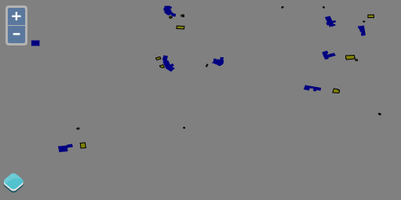
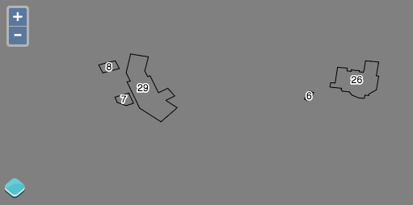

5.3. Styling Vector Layers¶
We’ll start with a working example that displays building footprints in a vector layer. Open your text editor and save the following as
map.htmlin the root of your workshop directory:<!doctype html> <html lang="en"> <head> <link rel="stylesheet" href="/ol.css" type="text/css"> <style> #map { background-color: gray; height: 256px; width: 512px; } </style> <title>OpenLayers 3 example</title> <script src="/loader.js" type="text/javascript"></script> </head> <body> <h1>My Map</h1> <div id="map"></div> <script type="text/javascript"> var map = new ol.Map({ target: 'map', layers: [ new ol.layer.Vector({ title: 'Buildings', source: new ol.source.Vector({ url: '/data/layers/buildings.kml', format: new ol.format.KML({ extractStyles: false }) }), style: new ol.style.Style({ stroke: new ol.style.Stroke({color: 'red', width: 2}) }) }) ], view: new ol.View({ projection: 'EPSG:4326', center: [-122.791859392, 42.3099154789], zoom: 16 }) }); </script> </body> </html>
Open this
map.htmlfile in your browser to see buildings with a red outline: http://localhost:3000/map.htmlWith a basic understanding of styling in OpenLayers, we can create a style function that displays buildings in different colors based on the size of their footprint. In your map initialization code, replace the style config option for the
Buildingslayer with the following:style: (function() { var defaultStyle = [new ol.style.Style({ fill: new ol.style.Fill({color: 'navy'}), stroke: new ol.style.Stroke({color: 'black', width: 1}) })]; var ruleStyle = [new ol.style.Style({ fill: new ol.style.Fill({color: 'olive'}), stroke: new ol.style.Stroke({color: 'black', width: 1}) })]; return function(feature, resolution) { if (feature.get('shape_area') < 3000) { return ruleStyle; } else { return defaultStyle; } }; })()
Save your changes and open
map.htmlin your browser: http://localhost:3000/map.htmlBuildings colored by footprint area.
Now as a final step, let’s add a label to the buildings. For simplicity we’re only using a label and a black outline as the style.
style: (function() { var stroke = new ol.style.Stroke({ color: 'black' }); var textStroke = new ol.style.Stroke({ color: '#fff', width: 3 }); var textFill = new ol.style.Fill({ color: '#000' }); return function(feature, resolution) { return [new ol.style.Style({ stroke: stroke, text: new ol.style.Text({ font: '12px Calibri,sans-serif', text: feature.get('key'), fill: textFill, stroke: textStroke }) })]; }; })()
Save your changes and open
map.htmlin your browser: http://localhost:3000/map.htmlBuildings labeled by the key field.